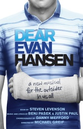

致埃文·汉森
内容简介：
致埃文·汉森由迈克尔·格雷夫执导，共获得九项托尼奖提名，其中六项包括本·普拉特的音乐剧最佳男主角以及最佳音乐剧提名。
该剧以贾斯汀·保罗的音乐、本杰·帕塞克的歌词和史蒂芬·莱文森的剧本为特色，《致埃文·汉森》讲述了一个自卑的高中生的故事，他觉得自己的一生都不受重视、没有意义。但是当一个震惊社会的悲剧事件发生后，他被推到了舆论的中心，埃文得到了一个机会：一个开始全新人生的机会。
HOME
BACK
FORUM
ABOUT